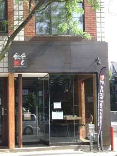
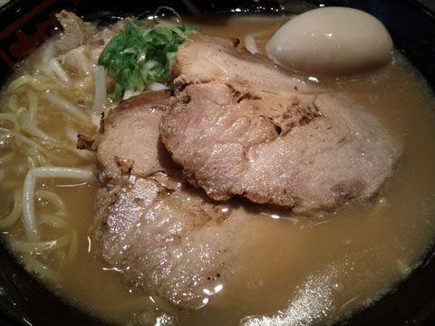
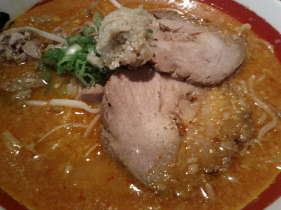

金とんのしょうゆラーメン

金とんは美術館のAGOからほど近く歩いて数分の距離にある。
ランチとディナーの間は閉まるので注意。J次郎と私は５時前、ディナータイムの始まる２０分も前に着いてしまった。
土曜だったせいか、開店の５時近くになるとひとが並び始め、開店してからすぐに店内はあっというまに満席。
スープとチャーシューが選べるようになっていた。

私がオーダーしたのは醤油ラーメン（９．５０ドル）。スープはライトを選んだが、十分こってりしていたので、ライトで良かった。麺は太麺。
チャーシューもライトにしたが、柔らかくておいしかった。J次郎はその厚みに驚き感動していた。卵もまるっと１個乗ってて、しかも黄身の半熟具合が絶妙。
とてもおいしかった。

辛いもの好きなJ次郎はスパイシーガーリックラーメン（９．８０ドル）をオーダーしたものの、予想以上にかなり辛かったため、ゆっくりとしか食べられなかった。それでも最後ごくごくとスープを飲んでいた。
その他に餃子も頼んだ。４個で３．５０ドル。当たり前だけど、豚肉の餃子だったのがよかった。どんどん居酒屋でも餃子頼もうとおもったのだが、鶏肉だったので頼まなかったのだ。餃子はやっぱり豚肉じゃなきゃね。
この日は暑い日だった。
暑い中外でしばらく待ち、満員の店のなかで熱いラーメンを食べると食べ終える頃には暑さに耐えきれなくなってきた。
そして、熱いのはラーメンだけではなく、店で働くひとたちも威勢がよく熱かった。ときどきなにやら元気にかけ声をかけあっている。まるでお祭りのよう。高校生のころそれはそれは熱い体育会系の部活に入部してしまい、その熱さに気づいたのは入部後だったが、自分とのあまりの温度差に違和感を覚えていた。ラーメンを食べながら、そんなことを思い出していた。
店をでたら、外の方が涼しく気持ちよかった。外は暑さが落ち着いていた。通りをはさんで店の前にあるベンチでしばらく涼んでいた。
隣の席に座っていたひとがオーダーしていたベジタブルラーメンは野菜がたっぷりと乗っていて美味しそうだったので、次はベジタブルラーメンを食べてみたいとおもった。塩ラーメンもおいしそうだし、J次郎はみそラーメンを食べてみたいとのことだった。メニューに乗っているもの全部ためしてみたくなる店だった。ニューヨークの一風堂よりも好き、ということでJ次郎と意見が一致した。
そして次にくるときには、なるべくなら暑くて満員になりそうな日は避けよう。
 にほんブログ村
にほんブログ村
 にほんブログ村
にほんブログ村